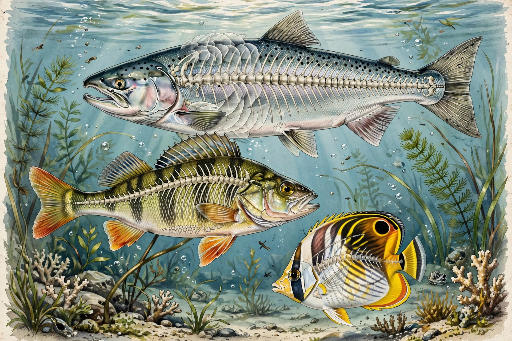

Osteichthyes, the bony fish, are vertebrates with skeletons primarily of bone rather than cartilage, contrasting with Chondrichthyes (sharks and rays). Traditionally it excludes tetrapods, but cladistically tetrapods descend from lobe-finned bony fish.
Features include an operculum covering the gills, a swim bladder or lung, overlapping scales, and ossified skull bones. Most breathe through gills and are ectothermic.
Ray-finned fish (Actinopterygii) dominate modern waters — over half of all vertebrate species — while lobe-finned Sarcopterygii include coelacanths and lungfish, ancestors of land vertebrates.